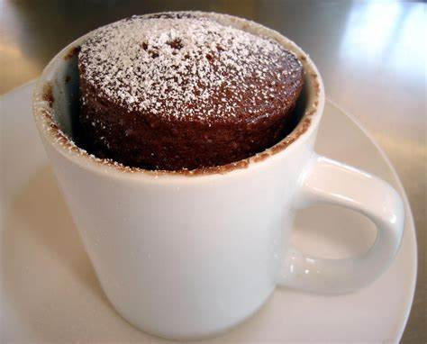

Bolo de Caneca

Ingredientes:
1 ovo
2 colheres (sopa) de achocolatado em pó
3 colheres (sopa) rasas de açúcar
1 colher (sopa) de óleo
4 colheres (sopa) rasas de farinha de trigo
1 colher (café) rasa de fermento em pó
4 colheres (sopa) de leite
*Calda*
2 colheres (sopa) de achocolatado em pó
1/2 xicara de leite
1 colher (sopa) de margarina
Modo de preparo
1. Coloque todos os ingredientes dentro de uma caneca de aproximadamente 300ml ou mais.
2. Mexa até obter uma massa homogênea e leve ao micro-ondas por 3 minutos.
*Calda*
3. Coloque todos os ingredientes em uma panela, leve ao fogo médio e misture até obter uma consistência grossa.
4. Despeje a calda sobre o bolo assim que retirá-lo do microondas.